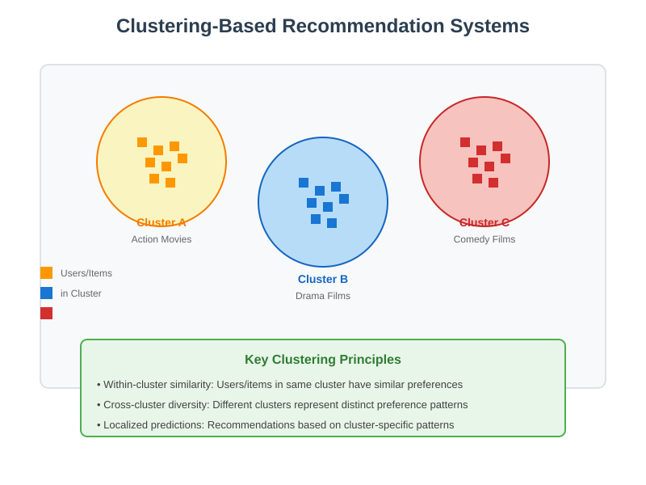
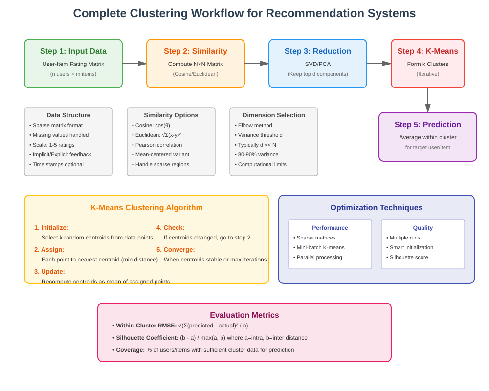
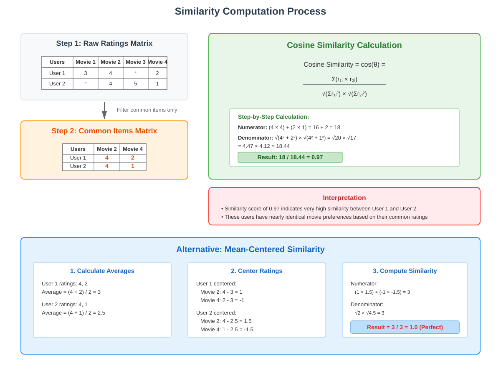
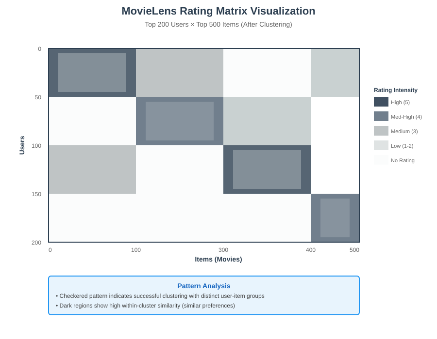

Clustering in Recommendation Systems
📚 Quick Navigation
- Overview
- Core Concepts
- Clustering Methodology
- Similarity Computation
- Alternative Approaches
- Dimensionality Reduction
- K-Means Clustering
- Limitations and Solutions
- Implementation Examples
- References & Further Reading
Overview
Clustering-based recommendation systems address a fundamental limitation of simple averaging methods by acknowledging that not all users or items are homogeneous. Instead of assuming global similarity, clustering creates multiple groups where users and items within each group share meaningful similarities.

This approach relaxes the strict homogeneity assumption while maintaining computational efficiency by restricting calculations to relevant clusters rather than the entire dataset.
Core Concepts
Fundamental Assumptions:
- Heterogeneous Global Population: Users and items are diverse across the entire system
- Homogeneous Local Clusters: Within identified clusters, users and items exhibit similar behaviors
- Meaningful Groupings: Natural groupings exist in user-item interaction patterns
- Cluster-Based Averaging: Predictions are made using only data from relevant clusters
Key Benefits:
- Improved Accuracy: More precise recommendations by focusing on similar users/items
- Scalability: Reduced computational complexity compared to analyzing all users
- Interpretability: Clear understanding of user/item segments
- Flexibility: Adaptable to different domains and data characteristics
The clustering approach transforms the recommendation problem from a global optimization challenge to multiple localized optimization problems, each more tractable and accurate.
Clustering Methodology
The Three-Step Process:
Step 1: Similarity Matrix Construction
The foundation of clustering lies in quantifying relationships between entities. We construct an N×N similarity matrix where each element represents the similarity between two users or items.
Similarity Metrics:
- Cosine Similarity: Measures the cosine of the angle between rating vectors
- Normalized Euclidean Distance: Accounts for the magnitude differences in ratings
- Pearson Correlation: Captures linear relationships while normalizing for rating scales
Step 2: Dimensionality Reduction
High-dimensional similarity matrices are reduced to lower-dimensional representations that preserve essential relationships while removing noise.
Techniques:
- Singular Value Decomposition (SVD): Identifies principal components of variation
- Principal Component Analysis (PCA): Reduces dimensions while maintaining variance
- Matrix Factorization: Decomposes the similarity matrix into latent factors
Step 3: Cluster Formation
Apply clustering algorithms to group similar users or items based on their low-dimensional representations.
Common Algorithms:
- K-Means: Partitions data into k distinct clusters
- Hierarchical Clustering: Creates nested cluster structures
- DBSCAN: Identifies clusters of varying densities

Similarity Computation
Basic Cosine Similarity
For users with common rated items, we calculate similarity using only the overlapping ratings.
Example Calculation:
Given two users with ratings on common movies:
User 1: Movie 2 = 4, Movie 4 = 2
User 2: Movie 2 = 4, Movie 4 = 1
Cosine Similarity Formula:
Cosine Similarity = Σ(r₁ᵢ × r₂ᵢ) / (√Σr₁ᵢ² × √Σr₂ᵢ²)
= (4×4 + 2×1) / (√(16+4) × √(16+1))
= 18 / (√20 × √17)
= 0.97
This high similarity score (0.97) indicates that User 1 and User 2 have very similar preferences.

Handling Missing Data:
- Common Items Only: Consider only movies rated by both users
- Zero Similarity Default: When no common ratings exist, assign similarity = 0
- Imputation Strategies: Fill missing values using cluster averages or global means
Alternative Approaches
Mean-Centered Similarity
A more sophisticated approach normalizes ratings by subtracting each user's average rating before computing similarity. This accounts for different rating scales and biases.
Process:
-
Calculate User Averages:
User 1 average = (4 + 2) / 2 = 3 User 2 average = (4 + 1) / 2 = 2.5 -
Center the Ratings:
User 1 centered: Movie 2 = 1, Movie 4 = -1 User 2 centered: Movie 2 = 1.5, Movie 4 = -1.5 -
Compute Similarity:
Similarity = (1×1.5 + (-1)×(-1.5)) / normalization = 1.0 (perfect correlation)
Advantages of Mean-Centering:
- Removes Rating Bias: Accounts for users who consistently rate high or low
- Improves Correlation Detection: Better identifies preference patterns
- Handles Sparse Data: More robust with limited overlapping ratings
Dimensionality Reduction
MovieLens Visualization Example
The MovieLens dataset demonstrates how clustering reveals structure in user-item interactions. After reordering users and items based on cluster membership, clear patterns emerge:

Visualization Insights:
- Checkered Pattern: Indicates distinct user-item clusters
- Within-Cluster Homogeneity: Similar ratings within each box
- Cross-Cluster Heterogeneity: Different patterns across clusters
- Data Selection: Top 200 users × Top 500 items for clarity
SVD Application
Mathematical Foundation:
Similarity Matrix S = UΣVᵀ
Where: - U = User feature matrix - Σ = Diagonal matrix of singular values - V = Item feature matrix
Dimension Selection:
- Retain top d components: Keep components with highest singular values
- Variance Threshold: Select dimensions explaining 80-90% of variance
- Computational Trade-off: Balance accuracy vs. efficiency
K-Means Clustering
Algorithm Implementation
Iterative Process:
- Initialize k Centroids: Random or informed selection
- Assign Points to Clusters: Based on nearest centroid
- Update Centroids: Compute mean of assigned points
- Repeat Until Convergence: When assignments stabilize
Optimal k Selection:
- Elbow Method: Plot within-cluster sum of squares vs. k
- Silhouette Analysis: Measure cluster cohesion and separation
- Domain Knowledge: Use business understanding to guide selection
Practical Considerations:
- Multiple Runs: Different initializations may yield different results
- Scalability: Use mini-batch K-means for large datasets
- Feature Scaling: Normalize features before clustering
Limitations and Solutions
Boundary User Problem
Challenge:
Users or items near cluster boundaries may not be well-represented by their assigned cluster, leading to suboptimal recommendations.
Manifestations:
- Reduced Accuracy: Predictions for boundary entities are less reliable
- Hard Assignment Issues: Binary cluster membership ignores gradual transitions
- Lost Information: Relationships with other clusters are ignored
Solutions:
- Soft Clustering: Use probabilistic cluster assignments (e.g., Gaussian Mixture Models)
- Collaborative Filtering: Combine clustering with neighborhood-based methods
- Hybrid Approaches: Weight contributions from multiple clusters
- Fuzzy C-Means: Allow partial membership in multiple clusters
Transition to Collaborative Filtering:
Collaborative filtering addresses these limitations by: - Considering individual user-item relationships - Avoiding hard cluster boundaries - Leveraging fine-grained similarity measures - Adapting to evolving user preferences
Implementation Examples
Python Implementation with Scikit-learn
from sklearn.preprocessing import StandardScaler
from sklearn.decomposition import PCA
from sklearn.cluster import KMeans
from sklearn.metrics.pairwise import cosine_similarity
import numpy as np
def cluster_based_recommendation(ratings_matrix, n_clusters=5):
"""
Implement clustering-based recommendation system
Args:
ratings_matrix: User-item rating matrix
n_clusters: Number of clusters to form
Returns:
cluster_labels: Cluster assignment for each user
centroids: Cluster centroids for prediction
"""
# Step 1: Compute similarity matrix
similarity_matrix = cosine_similarity(ratings_matrix)
# Step 2: Dimensionality reduction
pca = PCA(n_components=min(50, ratings_matrix.shape[0]//2))
reduced_features = pca.fit_transform(similarity_matrix)
# Step 3: K-means clustering
kmeans = KMeans(n_clusters=n_clusters, random_state=42)
cluster_labels = kmeans.fit_predict(reduced_features)
return cluster_labels, kmeans.cluster_centers_
Performance Optimization
Computational Improvements:
- Sparse Matrix Operations: Leverage scipy.sparse for memory efficiency
- Approximate Nearest Neighbors: Use LSH or random projection for large-scale similarity
- Incremental Learning: Update clusters with new data without full recomputation
- Parallel Processing: Distribute similarity calculations across cores
Integration with Production Systems
Deployment Considerations:
- Offline Clustering: Precompute clusters during batch processing
- Online Prediction: Fast cluster assignment for new users
- A/B Testing: Compare clustering approaches empirically
- Monitoring: Track cluster stability and recommendation quality
🚀 Google Colab Demo

Try our interactive demonstration implementing clustering-based recommendations on the MovieLens dataset.
🤗 Hugging Face Models
Explore related pre-trained models for recommendation systems: - RecBERT: BERT-based recommendation model - Neural Collaborative Filtering: Deep learning approach
📊 Performance Metrics
Evaluation Approaches:
- Within-Cluster RMSE: Measure prediction accuracy within clusters
- Coverage: Percentage of items that can be recommended
- Diversity: Variety in recommended items
- Novelty: Discovery of new relevant items
References & Further Reading
- Cluster Analysis in Recommender Systems - Comprehensive survey of clustering techniques
- Scalable Clustering Algorithms for Big Data - Modern approaches to large-scale clustering
- Hybrid Recommendation Systems - Combining clustering with other methods
- The Netflix Prize and Clustering - Real-world application case study
- Deep Learning for Recommendation Systems - Neural approaches to recommendations
- Collaborative Filtering Tutorial - Next steps beyond clustering
- Evaluating Recommendation Systems - Comprehensive metrics guide
- MovieLens Dataset Documentation - Dataset used in examples